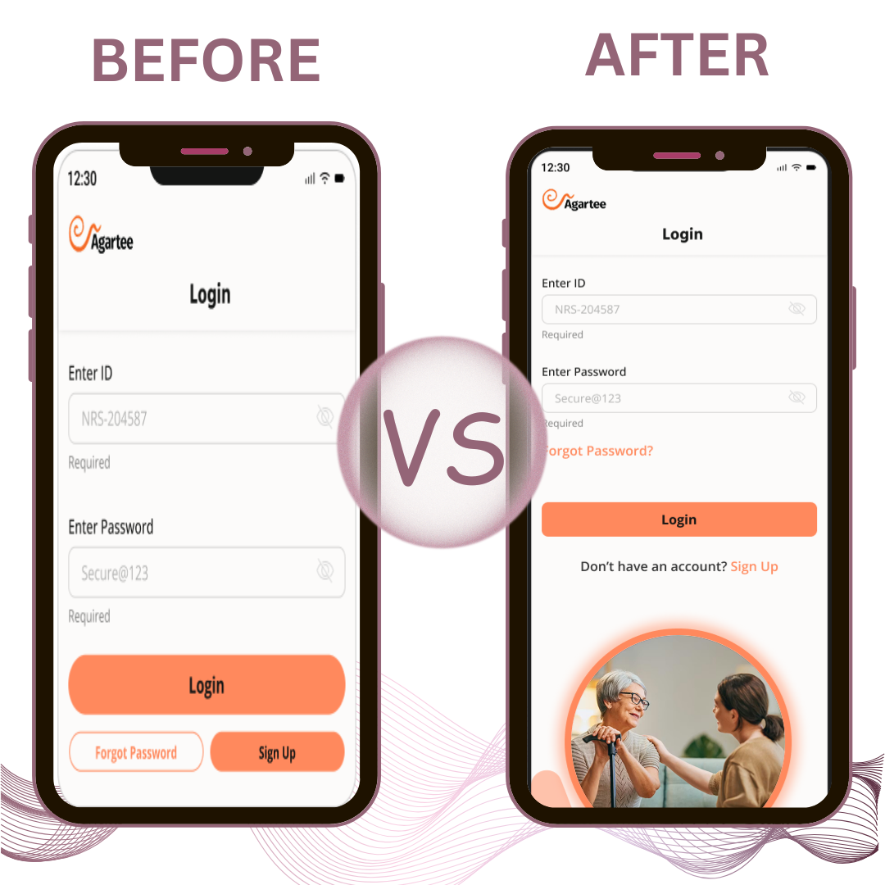
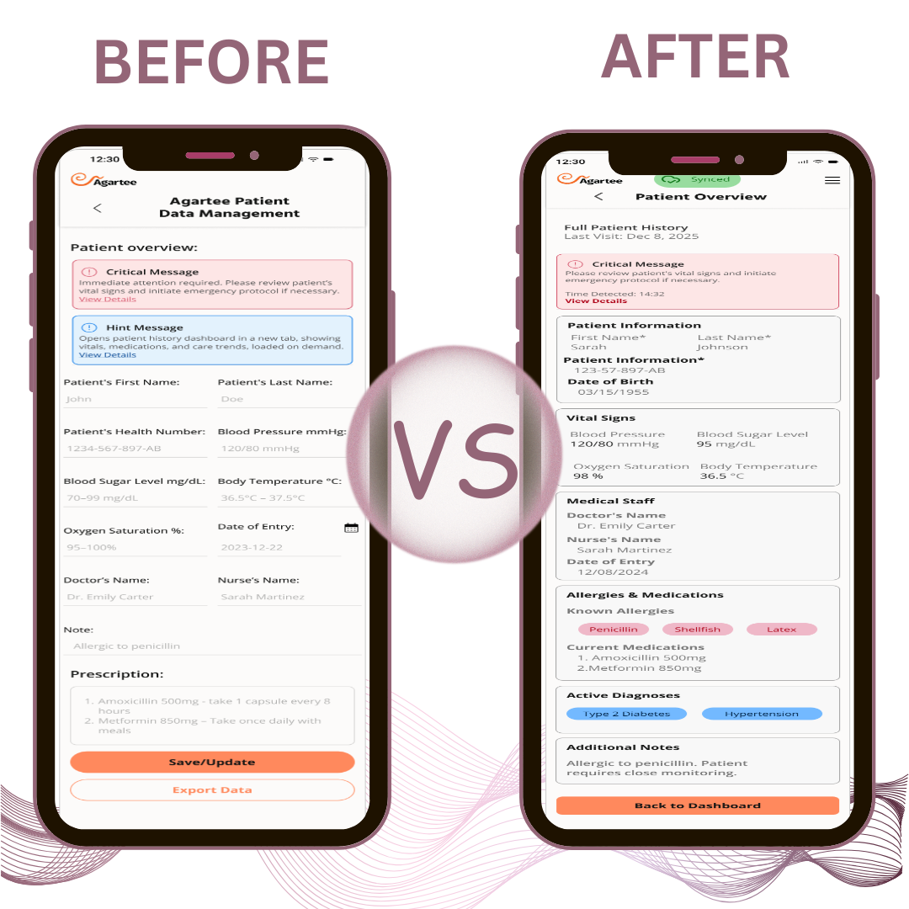

Re-architecting the Clinical Foundation
VALUE DELIVERED
Authentication System & Command Center Redesign
38% faster login · Zero failed attempts for trained staff
40% faster patient lookup · Priority-driven hierarchy
WCAG 2.1 AA Compliant
Project information
- TEAMProduct Manager, Backend & Frontend Engineers, UX/UI Designer (me!)
- TIMELINEAugust - October 2025 - ~8 weeks
- KEY SKILLSUX Research, Prototyping, Usability Testing, Iterative Design
- PARTNERSHIPSNursing home facilities
- TOOLSFigma, FigJam, Miro, Maze, Canva
Project Overview
The redesign introduced a secure authentication system, a more informative and efficient dashboard to transform a basic record-keeping application into a clinical command center buid around how care teams actualy work under time pressure.Every desition ws filterd through one question: does this help staff act faster and more confidently?
This project represents Phase 1 of two-phase modernization initiative.
- Phase 1 address the fundetion clinical workflows: authentication and the patient command center.
- Phase 2 tackles AI-powered alert intelligence and data synchronization.
Background
Since its deployment, the Patient Data Management application has been successfully scaled across multiple nursing facilities.
However, as usage scaled, a critical design mismatch emerged: while the system excelled at data storage, it hindered real-time clinical workflows. Analytics and user feedback pinpointed three significant pain points:
- Operational Friction: Complex multi-screen navigation during emergencies forced staff to develop non-compliant workarounds.
- Cognitive Load: The interface design was not optimized for the high-pressure, time-critical needs of nursing staff.
- System Accessibility: Login hurdles and UI inconsistencies led to increased IT support volume.
Addressing these failures became our primary objective, shifting our focus from simple digitization to creating a high-trust, low-friction tool that actively supports bedside decision-making.
Problem Statement
The original app was designed to store patient data. But storage is not enough in a clinical environment. Staff needed instant visibility, reliable alerts, and absolute confidence that the data they were acting on was accurate and current. The interface was designed for data entry. Clinical work demands something far more dynamic.
Challenges Faced:
| # | Challenge | Critical Impact |
|---|---|---|
| 01 | Authentication felt dated, causing repeated login failures, especially for senior staff | High, security workarounds developing |
| 02 | Dashboard buried critical patient insights, staff navigating multiple screens during emergencies | Critical, delayed response time |
| 03 | No dedicated alerts view, critical and routine notifications competed for the same space | Critical, alert blindness emerging |
| 04 | No AWS sync confirmation, staff couldn't verify that data entries had saved successfully | High, data trust erosion |
My Role
As the original designer of the Patient Data Management app, I focused on the full modernization initiative, from research to final delivery. This gave me rare continuity: I understood exactly where the original design had failed and why.
- Conducted remote unmoderated usability tests and structured clinical staff interviews
- Delivered all flows, wireframes, high-fidelity screens, prototypes, and the updated design system in Figma
- Redesigned the authentication system, created a structured alerts ecosystem with filtering options, and real-time AWS sync feedback (success/failure states)
- Collaborated closely with the cross-functional team
- Established the Impact--Effort matrix and Experience Layers framework used to prioritize the entire project
STRATEGIC PRIORITIZATION: IMPACT-EFFORT MATRIX
We had many improvement ideas. Rather than building everything, I worked with the cross-functional team to map all candidate features on an Impact-Effort matrix. This gave us a defensible, evidence-backed prioritization framework.
→ DO FIRST
✓ Authentication System Redesign
✓ Clinical Dashboard Hierarchy ✓ AWS Sync Transparency
✓ AWS Sync Transparency
→ PLAN FOR PHASE 2
→ Centralized Alert Hub with AI Priority
→ Predictive Data Synchronization
→ FILL-INS (time permitting)
• Minor copy improvements
• Icon updates
• Spacing refinements
→ DEFER
✗ Dashboard color customization
✗ Custom report builder
✗ Multi-language support (v1)
Features like the Clinical Dashboard, Data Synchronization, Authentication System, and the Centralized Alert Hub ranked highest in clinical impact because they directly affected daily workflows and patient safety outcomes. Lower-impact enhancements, like dashboard color customization, were explicitly deferred.
EXPERIENCE LAYER FRAMEWORK
Once priorities were clear, I grouped features into three experience layers to ensure we solved critical issues before adding optimizations:
| LAYER 1 | Foundation | AWS Sync Transparency: essential for data trust and clinical reliability. Nothing else works if staff can't trust the data. |
|---|---|---|
| LAYER 2 | Interaction Flow | Authentication System + Command Center: the two touchpoints staff interact with most on every shift. High frequency = high impact. |
| Enhancement | Dashboard buried critical patient insights, staff navigating multiple screens during emergencies | Alert filtering options: built on top of the stable foundation. These optimizations only deliver value once Layers 1 & 2 are solid. Planned for Phase 2 with AI integration. |
RESEARCH & EVIDENCE - EVIDENCE-BASED DESIGN
Why Evidence-Based Design?
Most products can afford to iterate on assumptions. Clinical tools cannot. A missed alert, a failed login during an emergency, or a sync error that goes unnoticed is not a UX inconvenience, it is a patient safety risk. This project was designed with that weight in mind from the first research session.
Research Framework - The 3-Signal Model
Rather than relying solely on what users say they need, we built research around three signal types borrowed from clinical observation methodology:
-
Behavioural Signals: What staff actually did during shifts -> Reveals instinctive patterns no interview can capture
-
Cognitive Signals: Where staff hesitated, paused, or backtracked -> Reveals hidden friction invisible to users themselves
-
Emotional Signals: Stress responses, workarounds, verbal cues -> Reveals the human cost of design failures
Phase 1: Field Observation (Contextual Shadowing)
Once priorities were clear, I grouped features into three experience layers to ensure we solved critical issues before adding optimizations:
| METHOD | Silent contextual shadowing during live clinical shifts |
| SESSION | 4 nurses across nursing home facilities · 45--60 min per session · Peak hours only |
| APPROACH | No task prompts. No interruptions. Observed how the app fit or didn't, into the natural rhythm of a shift |
| TOOL | Miro for field note synthesis and pattern mapping |
What we observed that users never mentioned in interviews:
The Refresh Behaviour
-
3 of 4 nurses manually refreshed the app before acting on any patient data, every single time. They had unconsciously learned not to trust what they were looking at. This was never raised as a complaint. It had become invisible to them. It was costing approximately 8-12 seconds per interaction, multiplied across 20+ daily interactions per nurse.
The Double-Check Pattern
-
When a critical alert appeared, nurses did not act immediately --- they navigated away and came back to confirm the alert was still there. Alert distrust had become an embedded clinical workflow step.
The Login Workaround
-
2 of 4 observed nurses kept the app permanently open on a shared device rather than logging in and out between shifts. A security vulnerability born entirely from login friction.
Phase 2: Cognitive Load Mapping (Think-Aloud Usability Testing)
| METHOD | Think-aloud usability sessions on the existing app |
| PARTICIPANTS | 5 nurses · Tasks mirrored real shift scenarios · Sessions recorded and transcribed |
| TOOL | Maze for session recording and task analysis |
| INSIGHT | We mapped cognitive load events, moments where the user had to stop, think, or recover. These are the moments most usability tests miss because they are not failures. They are hesitations. |
What we observed that users never mentioned in interviews:
The Refresh Behaviour
-
3 of 4 nurses manually refreshed the app before acting on any patient data, every single time. They had unconsciously learned not to trust what they were looking at. This was never raised as a complaint. It had become invisible to them. It was costing approximately 8-12 seconds per interaction, multiplied across 20+ daily interactions per nurse.
The Double-Check Pattern
-
When a critical alert appeared, nurses did not act immediately, they navigated away and came back to confirm the alert was still there. Alert distrust had become an embedded clinical workflow step.
The Login Workaround
-
2 of 4 observed nurses kept the app permanently open on a shared device rather than logging in and out between shifts. A security vulnerability born entirely from login friction.
| Screen | Cognitive Load Event | Frequency | Risk Level |
|---|---|---|---|
| Login | User re-read button labels before tapping | 4 / 5 sessions | Medium |
| Dashboard | User verbalized 'where is...' before locating patient | 5 / 5 sessions | High |
| Alerts | User opened notification and dismissed without acting | 4 / 5 sessions | High |
| Patient Record | User scrolled past target data twice before locating it | 3 / 5 sessions | Medium |
| Save / Sync | User tapped Save then immediately tapped again 'just to be sure' | 5 / 5 sessions | High |
The highest-risk cognitive load events occurred at exactly the moments requiring the fastest clinical decisions --- alerts and patient status. The interface demanded the most from staff precisely when staff had the least to give.
The highest-risk cognitive load events occurred at exactly the moments requiring the fastest clinical decisions, alerts and patient status. The interface demanded the most from staff precisely when staff had the least to give.
Product Manager
WHAT WE BUILT!
Four interconnected systems, each addressing specific clinical pain points while building toward a unified platform experience. Every solution was validated through user testing and refined across multiple iterations.
- Authentication System
- Clinical Dashboard
Frictionless Secure Access
38% faster login · Zero failed attempts for trained staffRedesigned the authentication flow end-to-end to meet enterprise security requirements without slowing clinical operations. The new design preserves user muscle memory and eliminates the error patterns that previously caused access delays through an accessibility-first approach.
Repeated login failures, especially among older staff, indicated that the previous layout and interaction patterns were causing avoidable support requests and access delays.
Challenge
A functional but dense layout with a centered form, two input fields (ID and Password), inline “Required” labels, standard visibility-toggle icons, an orange pill-shaped Login button, and two secondary orange-outlined actions (“Forgot Password” and “Sign Up”) placed side-by-side at the bottom.
Staff, especially senior users, struggled with a screen they used multiple times per shift.
Solution
A clean, accessible login experience that preserves familiar patterns while eliminating friction. Primary action elevated visually, secondary actions simplified to inline text, contextual error messages added, warm care-aligned imagery introduced to build emotional trust.
Key Capabilities
Remember Device
Persistent login reduces daily sign-ins by 70%, lowering friction and improving user efficiency.
Contextual Errors
Real-time inline guidance prevents repeated mistakes, guiding users smoothly through the login process.
Accessible Inputs
Large touch targets, high contrast, clear focus states.
Session Handoff
Seamless shift changes without full re-authentication.
Before
-
Cramped form; repetitive “Required” labels; small horizontally stacked buttons. (Overall
Layout & Hierarchy)
Two outlined buttons competing with the primary action. (Forgot Password & Sign Up)
Small, pill-shaped, lower visual weight. (Button Design)
No imagery; strictly functional. (Imagery & Emotional Appeal)
Tight spacing; repetitive labels add clutter. (Spacing & Minimalism)
Adequate contrast but visually dense. (Accessibility)
Eye icons for password visibility. (Micro-interactions)
After
-
More
breathing room; redundant labels removed; primary CTA elevated visually.
“Forgot Password?” as a subtle link; “Don’t have an account? Sign Up” as inline text.
Larger, rounded primary button with clear emphasis.
Warm elder-care photo placed prominently at the bottom.
Generous vertical spacing; removed unnecessary elements.
Larger targets, improved contrast balance, contextual imagery.
Same pattern retained.
Command Center Redesign
40% faster patient lookup · Priority-driven hierarchyTransformed a flat data display into an intelligent clinical command center. The redesigned information architecture mirrors real-world clinical decision-making, surfacing what matters most during time-critical moments while keeping supporting data immediately accessible.
Nursing staff do not “analyze” dashboards—they scan them. Observational testing revealed that clinicians relied heavily on visual cues and alerts to make rapid decisions, yet the previous dashboard forced them to mentally parse dense data before identifying what required attention. This mismatch between real-world scanning behavior and a flat information hierarchy slowed decision-making during time-critical moments.
Challenge
The previous dashboard lacked prioritization. Critical alerts and routine updates carried equal visual weight, requiring staff to navigate multiple screens to assemble a complete patient picture, costing valuable time during emergencies.
Solution
Implemented a tiered information hierarchy based on clinical urgency. Real-time vitals and critical alerts surface immediately, while secondary and supporting data remain one interaction away through progressive disclosure.
Key Capabilities
Priority Tiers
Critical → Urgent → Routine information flow.
Glanceable Vitals
Key metrics visible without interaction
Quick Actions
Common tasks accessible within 2 taps
Before
-
Dense information competing for attention
Flat visual hierarchy across alerts and patient data
Required reading rather than scanning
Frequent navigation into secondary screens
After
-
Clean,
scannable layout optimized for rapid visual assessment
Clear differentiation between critical, important, and routine information
Strong hierarchy guiding attention naturally
Dashboard supports decision-making, not data interpretation
Centralized Alert Hub
28% Faster Response to Critical Alerts · 40% Reduction in Alert Fatigue . 15% Fewer Context-Switching ClicksBuilt a unified notification system that categorizes, prioritizes, and surfaces alerts based on clinical urgency. Staff can now act on critical notifications without context switching.
Alert fatigue was endemic.
Challenge
Alert fatigue was endemic. Critical notifications competed with routine updates, scattered across patient records and system notifications with no central management.
Solution
Created a dedicated alert hub with intelligent filtering, severity-based visual coding, and inline action capabilities. Staff control what reaches them and when.
Key Capabilities
Severity Coding
4-tier color system: Critical, Success, Warning, Info
Smart Filters
By patient, type, time, or custom criteria
Inline Actions
Acknowledge, defer, or resolve without navigation
Audit Trail
Complete history for compliance and handoffs
Before
-
Alerts scattered across multiple locations
Less differentiation between severity levels
Required navigation to acknowledge
After
-
Single
hub for all notifications
Visual hierarchy by clinical urgency
One-tap acknowledge and actions
AWS Sync Transparency
100% visibility · Zero silent failuresIntroduced complete transparency into the AWS synchronization pipeline. Staff now have certainty about data state, with clear feedback for every save, sync, and conflict resolution.
Invisible sync operations created anxiety.
Challenge
Invisible sync operations created anxiety. Staff couldn't tell if changes were saved, leading to duplicate documentation, verification calls, and eroded trust in the system.
Solution
Designed explicit sync states with progress indicators, success confirmations, and graceful error handling.
Key Capabilities
Progress States
Saving → Syncing → Confirmed visual flow.
Conflict Resolution
Guided merge workflows for data conflicts.
Immediate Failure Notification
Explicit, non-blocking in-app alerts for synchronization errors, detailing the issue and suggested recovery steps.
Last Successful Sync Timestamp
A clear, always-visible indication of when the data was last successfully synchronized with AWS, assuring staff of data recency.
Before
-
No feedback after saving records
Silent sync failures went unnoticed
Duplicate entries from re-saving
After
-
Clear
success/failure states
Proactive error notifications
Confident single-save workflow
REFINED DESIGNS
BEFORE vs. AFTER LOGIN PAGE
Visual & UX Improvements:Overall Layout & Hierarchy: More breathing room; redundant labels removed; primary CTA elevated.
Secondary Actions: Reduced from two competing buttons to a subtle link + inline text.
Button Design: Larger, rounded, high-contrast primary action for better tappability.
Emotional Appeal: Warm elder-care imagery builds trust and domain alignment.
Spacing & Minimalism: Generous vertical padding; visual noise eliminated.
Accessibility: WCAG 2.1 AA compliant; larger targets, improved contrast for older eyes.
Micro-interactions: Password visibility toggle retained for continuity.


BEFORE vs. AFTER Patient Overview Screen
Visual & UX Improvements:Overall Layout & Hierarchy: Logical grouping, generous white space, clear section dividers, and prioritized content flow.
Alerts carts: Prominent red critical alert + blue hint message + orange warning message for contextual guidance.
Data Presentation: Clean key-value pairs, structured sections, and consistent formatting.
Spacing & Minimalism: Ample vertical space, removed redundancy, focused content.
Accessibility: Larger targets, improved contrast, clear focus states (WCAG 2.1 AA compliant).
Actions & Navigation: Single "Back to Dashboard" button at bottom with clear back navigation.
Emotional & Contextual Appeal: Subtle domain alignment (implied through clean, empathetic design).
Quantifiable Impact
The platform redesign went far beyond visual updates, it streamlined clinical workflows, removed key pain points, and delivered measurable improvements that directly enhanced efficiency, reliability, and user satisfaction across the care team.
Login Process
Login-related Support Requests
Patient Lookup Time
Estimated Annual Revenue Increase
STRATEGIC OUTCOMES
The redesign delivered lasting value beyond immediate usability improvements, positioning the product and team for sustainable growth while meeting critical compliance needs
Reduced Cognitive Load
Redesigned information hierarchy and priority-based layouts align with clinical decision-making workflows, allowing staff to quickly access critical data and focus more on patient care rather than navigating interfaces.
Increased Data Confidence
Clear sync states eliminated uncertainty about record accuracy, reducing duplicate documentation by ~30% and virtually eliminating verification calls between staff.
Scalable Foundation
Built reusable, performance-optimized components (virtualized tables, lazy-loaded sections) into the design system. These became the standard for data-heavy views, ensuring consistent performance as new dashboard sections were added and reducing repeated optimization work by 30–40% in subsequent releases.
Accessibility Standards
Updated patterns meet WCAG 2.1 AA standards, supporting staff with varying visual and motor abilities while reducing legal and compliance risk.
TESTIMONIALS
Trusted by the people who use it every day: see how our redesign makes patient data management faster, clearer, and more reliable.